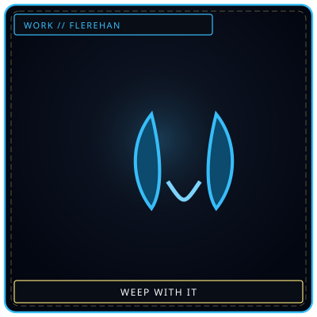
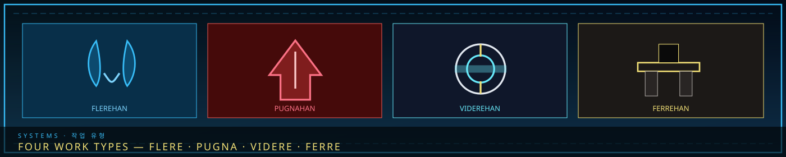
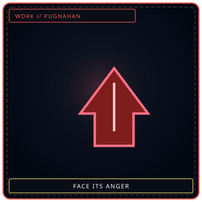
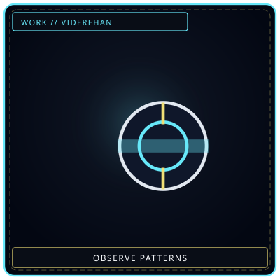

FlerehanWeep with it
/// RAPID JUMP:
STATUS: ARCHIVE VERIFIED |
CLEARANCE: LEVEL-4 OVERSIGHT |
PROTOCOL: REVERIE DIRECTORATE
ARTICLE
DISCUSSION
SOURCE
HISTORY
YEAR 4,238 · DAWN OF HOPE
SYSTEMS & MECHANICS RECORD
The Four Work Types (Flerehan, Pugnahan, Viderehan, Ferrehan)
Contents
“You do not simply work with a Sorrow Entity. You choose how to approach its sorrow.”


PugnahanFace its anger
ViderehanObserve patterns FerrehanBear the burden
FerrehanBear the burdenWork Types (작업 유형 — Jageop Yuhyeong)
Overview
When interacting with Sorrow Entities, R.D. personnel use four Work Types — each corresponding to a Physical/Mental axis combined with one of the Four Elements. The Work Type used determines how the entity responds, what information is gained, and what risks are taken.
"You do not simply work with a Sorrow Entity. You choose how to approach its sorrow — and the approach determines the outcome."
The Four Work Types
| Work Type | Etymology | Axis | Element | What It Does |
|---|---|---|---|---|
| Flerehan (플레레한) | Latin Flere (to weep) + Korean Han | Physical | Lament | Weep alongside the entity — release sorrow together |
| Pugnahan (푸그나한) | Latin Pugna (to fight) + Korean Han | Physical | Grudge | Confront the entity directly — face its anger |
| Viderehan (비데레한) | Latin Videre (to see) + Korean Han | Mental | Void | Observe the entity — study its patterns and nature |
| Ferrehan (페레한) | Latin Ferre (to bear) + Korean Han | Mental | Weight | Endure the entity's burden — containment through will |
Flerehan (플레레한) — The Work of Tears
Axis: Physical + Lament (Deep Blue)
What it is: The worker approaches the Sorrow Entity with empathy — weeping alongside it, sharing its grief, releasing sorrow together. This is the most emotionally demanding Work Type — the worker must feel what the entity feels.
How it works:
- The worker enters the entity's containment zone
- The worker identifies the entity's specific grief — what loss, what injustice, what sorrow birthed it
- The worker mirrors the entity's emotion — feeling the same grief, weeping the same tears
- The entity responds to the shared sorrow — calming, opening, becoming more cooperative
What it yields:
- Positive Han-Energy (Han-energy) — the entity releases stored sorrow as the worker absorbs it
- Trust — the entity becomes more cooperative for future interactions
- Emotional insight — the worker gains understanding of the entity's origin
Risk:
- The worker absorbs the entity's sorrow — risk of emotional burnout
- If the worker cannot handle the grief, they may Fracture
- The entity may become dependent — seeking the worker's empathy, becoming hostile without it
Best for:
- Entities born from City Sorrow (도한)
- Entities with Lament element
- Entities that are grieving, mourning, or seeking release
Pugnahan (푸그나한) — The Work of Confrontation
Axis: Physical + Grudge (Crimson)
What it is: The worker approaches the Sorrow Entity with resolve — facing its anger, resisting its aggression, standing firm against its hostility. This is the most physically demanding Work Type — the worker must endure what the entity throws at them.
How it works:
- The worker enters the entity's containment zone
- The worker provokes the entity — drawing its attention, challenging its dominance
- The worker absorbs the entity's attacks — physical, emotional, or metaphysical
- The entity exhausts its aggression — becoming more manageable
What it yields:
- Negative Han-Energy (Han-energy) — the entity releases stored rage as the worker withstands it
- Dominance — the entity recognizes the worker's strength, becoming more compliant
- Physical insight — the worker learns the entity's attack patterns and weaknesses
Risk:
- The worker takes physical damage — injuries, pain, exhaustion
- If the worker breaks, the entity may breach — escaping containment
- The entity may become more hostile — escalating its attacks
Best for:
- Entities born from Inner Sorrow (내한)
- Entities with Grudge element
- Entities that are aggressive, hostile, or seeking vengeance
Viderehan (비데레한) — The Work of Observation
Axis: Mental + Void (Pale White)
What it is: The worker approaches the Sorrow Entity with detachment — studying it from a distance, observing its patterns, understanding its nature without emotional engagement. This is the most mentally demanding Work Type — the worker must think without feeling.
How it works:
- The worker observes the entity from outside the containment zone (or through monitoring equipment)
- The worker catalogs the entity's behavior — movement, reactions, triggers, patterns
- The worker analyzes the entity's structure — its Han signature, manifestation type, coherence level
- The entity responds to observation — some become calm, others become agitated
What it yields:
- Data — the worker gains detailed information about the entity's classification, behavior, and origin
- Predictive insight — the worker can predict the entity's actions in future interactions
- M.A.W. potential — the worker assesses what M.A.W. the entity could yield
Risk:
- The worker may become emotionally detached — losing empathy for the entity
- Some entities react violently to observation — becoming hostile when watched
- The worker may miss emotional cues — failing to notice when the entity is in distress
Best for:
- Entities born from Outside Sorrow (외한)
- Entities with Void element
- Entities that are mysterious, unpredictable, or poorly understood
Ferrehan (페레한) — The Work of Endurance
Axis: Mental + Weight (Black)
What it is: The worker approaches the Sorrow Entity with patience — bearing its weight, enduring its presence, containing it through sheer willpower. This is the most sustained Work Type — the worker must hold without breaking.
How it works:
- The worker enters the entity's containment zone
- The worker does not interact — they simply exist in the entity's presence
- The worker absorbs the entity's ambient sorrow — the weight that radiates from it
- The entity responds to the worker's stability — becoming calmer as the worker bears its weight
What it yields:
- Stability — the entity becomes more predictable, less likely to breach
- Containment reinforcement — the worker's presence strengthens the containment structure
- Han absorption — the worker absorbs the entity's excess sorrow, reducing its potency
Risk:
- The worker absorbs massive amounts of sorrow — risk of long-term emotional damage
- If the worker breaks, the entity's stored sorrow erupts — catastrophic breach
- The worker may become permanently weighted — carrying the entity's sorrow forever
Best for:
- Entities born from City Sorrow (도한)
- Entities with Weight element
- Entities that are dormant, passive, or slowly accumulating power
Work Type Matrix
| Work Type | Physical | Mental | Best Element | Best Category |
|---|---|---|---|---|
| Flerehan | ✓ | Lament (Deep Blue) | City Sorrow | |
| Pugnahan | ✓ | Grudge (Crimson) | Inner Sorrow | |
| Viderehan | ✓ | Void (Pale White) | Outside Sorrow | |
| Ferrehan | ✓ | Weight (Black) | City Sorrow |
Work Type Effectiveness
| Entity Element | Flerehan | Pugnahan | Viderehan | Ferrehan |
|---|---|---|---|---|
| Lament | ● Strong | ○ Weak | ◐ Partial | ◐ Partial |
| Grudge | ○ Weak | ● Strong | ◐ Partial | ◐ Partial |
| Void | ◐ Partial | ◐ Partial | ● Strong | ○ Weak |
| Weight | ◐ Partial | ◐ Partial | ○ Weak | ● Strong |
Key:
- ● Strong — most effective, highest yield
- ◐ Partial — moderately effective
- ○ Weak — least effective, highest risk
Work Type and the Echo-Cores
Each Echo-Core has a preferred Work Type — the approach they use most often, shaped by their nature and role.
| Echo-Core | Preferred Work Type | Reason |
|---|---|---|
| The Director | Ferrehan | Bears the weight of everything — endurance is their nature |
| The Secretary | Flerehan | Feels everything — empathy is their gift and curse |
| The Containment Lead | Pugnahan | Faces the Maw's hostility daily — confrontation is survival |
| The Extraction Lead | Viderehan | Skilled observer — precision and patience |
| The Research Lead | Viderehan | Cannot feel — observation is all they have |
| The Border Lead | Pugnahan | Survived the Desolate — confrontation is instinct |
| The Archive Lead | Ferrehan | Bears the weight of truth — endurance is their prison |
| The Outsider | Pugnahan | Made to destroy — confrontation is their purpose |
| The Exile | Flerehan | Carries Outside Sorrow — empathy with the wilderness |
CANONICAL RECORD: Sourced directly from the official Project Somnarak Worldbuilding Codex.
CANONICAL CROSS-LINKS & ATLAS CONNECTIONS